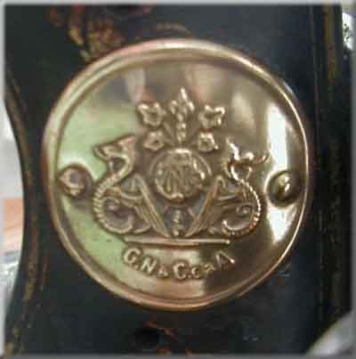

Catalogue of German Makers' Logos
Grimme Natalis & Co
Braunschweig (Brunswick)

©
Alan Quinn 2000 All Rights Reserved
This page may not be reproduced or distributed in part or in whole without the prior written permission of the relevant copyright owner